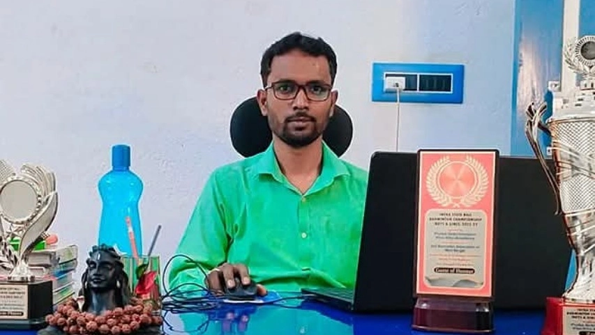
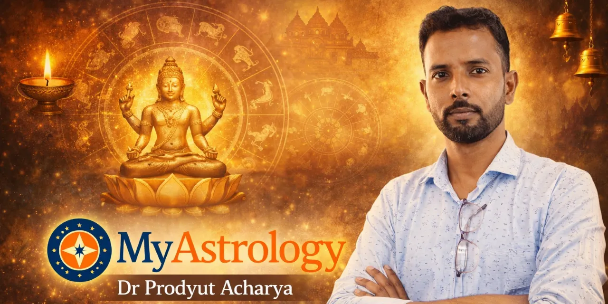
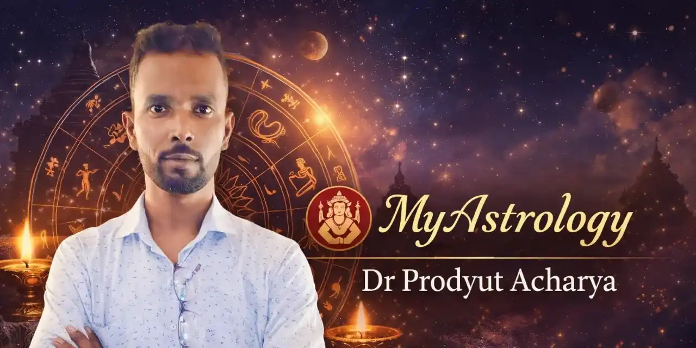
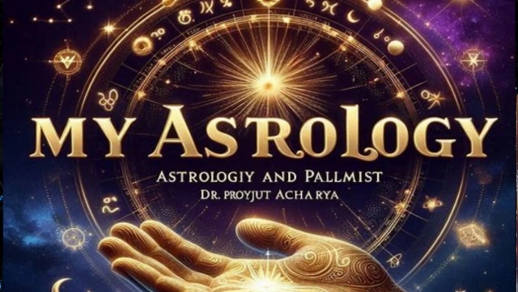

পশ্চিমবঙ্গ শুধু একটি রাজ্য নয় — এটি একটি অনুভূতি। দামোদরের বালিতে খেলা, তারাপীঠের শ্মশানে শিহরণ, ত্রিবেণীর কুম্ভমেলায় জীবন বদলে যাওয়ার মুহূর্ত, দীঘার ঢেউয়ে মাছ ভাজার গন্ধ — এই সব মিলিয়েই ড. প্রদ্যুৎ আচার্যের পশ্চিমবঙ্গ।
দামোদর নদীর তীরে — বর্ধমানের সেরা জ্যোতিষীর স্মৃতি (২০২৬)
দামোদর নদী — পশ্চিমবঙ্গের প্রাণনদী। দুর্গাপুর "মাঝের মানা" — এখানেই ড. আচার্যের মামাবাড়ি, দামোদর নদীর তীরে।
ওখান থেকে চাষের জমির উপর দিয়ে পায়ে হেঁটে নদীতে যাওয়া। বাঁধের কারণে নদীর একদিক সম্পূর্ণ শুকনো — সেখানে লরি সাজিয়ে বালি তোলা হয়। নদীর ধারে কাশবন, হাওয়ায় দোলা — প্রকৃতি এক অপরূপ সৌন্দর্যে সেজেছে।
স্ত্রী, পুত্র ও ভাগ্নীকে নিয়ে সেই বালির বুকে আনন্দ, ছুটোছুটি, ছবি তোলা। বড় হওয়ার পরেও সেই শৈশবের মাটি কীভাবে মনকে টানে — এই অনুভূতি শুধু যে বোঝে, সে বোঝে।

তারাপীঠ সিদ্ধপীঠ — বীরভূমের আধ্যাত্মিকতায় ড. আচার্য
তারাপীঠ — বীরভূমের এই সিদ্ধপীঠে বামাক্ষ্যাপার সাধনাক্ষেত্র। রাণাঘাট থেকে লরি ভাড়া করে কয়েকজন বন্ধু মিলে — কৌশিকী অমাবস্যায় মায়ের আরাধনা ও শ্মশানে হোমযজ্ঞ।
শ্মশানের আগুন, মন্ত্রের ধ্বনি, রাতের আঁধার — এই পরিবেশে একটা কথা মনে হয়: জীবন কতটা ক্ষণস্থায়ী। যা নিয়ে এত কষ্ট পাই, এত আকাঙ্ক্ষা রাখি — সবই একদিন মাটিতে মিশে যাবে।
এখন আর যাওয়া হয় না। কিন্তু সেই স্মৃতি আজও মনের মধ্যে একটা বিশেষ জায়গা দখল করে আছে।

ত্রিবেণী কুম্ভমেলা — হুগলি জেলায় জীবন বদলে যাওয়ার মুহূর্ত
ত্রিবেণী — গঙ্গা, যমুনা ও সরস্বতীর মিলনস্থল। কুম্ভমেলায় সপরিবারে গিয়েছিলেন।
বিভিন্ন সাধুসন্ন্যাসীদের দেখে মনে ভক্তিভাব চলে আসে। কিন্তু সেদিনের বিশেষত্ব অন্য জায়গায়। সেই সময় মানসিকভাবে ভীষণ বিধ্বস্ত ছিলেন — কিছু আশা পূরণ না হওয়ার বেদনায়।
তখন হৃদয়ের গভীর থেকে একটাই প্রশ্ন উঠে আসছিল —
সেই মুহূর্তে ঈশ্বরের কাছে একটাই প্রার্থনা করলেন —
এই প্রার্থনার পর থেকে জীবন বদলে গেল। চাওয়া-পাওয়ার আকাঙ্ক্ষা কমে গেল, মন অনেক শান্ত হলো।

এবং ত্রিবেণীর সেই ডাকাত কালী মন্দির — যেখানে মায়ের বিশাল প্রতিমা আজও মোটা শিকল দিয়ে পায়ে বাঁধা। দেখে শরীরের ভেতরে এক অদ্ভুত শিহরণ জেগে ওঠে।
এই ত্রিবেণীর উপলব্ধিই তাঁর জ্যোতিষচর্চার দর্শনের ভিত্তি —
দীঘা সমুদ্র সৈকত ও শান্তিনিকেতন — পশ্চিমবঙ্গের পর্যটন ও প্রকৃতি
দীঘার সমুদ্র সৈকত — বহুবার ভ্রমণ হয়েছে। কখনো বন্ধুরা মিলে, কখনো পরিবার নিয়ে। সমুদ্রে স্নান থেকে শুরু করে সন্ধ্যায় সমুদ্রপারে মেলায় কেনাকাটা।
"সমুদ্রের টাটকা মাছ ভাজা খাওয়া আমার ভীষণ প্রিয়।" তালশাড়ি, ঝাউবন, মোহনা — যেখানে সমুদ্রের সাথে নদী মিশে। সেই মোহনায় সমুদ্র ও নদীর জলের পার্থক্য মন মুগ্ধ করে। দুটো ভিন্ন প্রকৃতির জল — পাশাপাশি, তবু আলাদা। এই দৃশ্য জীবনের একটা দর্শনও বলে যায়।
শান্তিনিকেতন — যেন এক শান্তির জায়গা। রবীন্দ্রনাথ ঠাকুরের স্মৃতি মনে করিয়ে দেয় তাঁর গদ্য, কবিতা, উপন্যাসের কথা।

মুর্শিদাবাদের হাজারদুয়ারি ও ঠাকুরনগর মতুয়া মেলা
হাজারদুয়ারি প্যালেস — মুর্শিদাবাদের এই ঐতিহাসিক প্রাসাদ আজও ইতিহাসের সাক্ষী দেয়। বাংলার নবাব কীভাবে বাংলা-বিহার-ওডিশা শাসন করতেন — এই প্রাসাদ সে কথা বলে। আসল-নকল বহু দরজা থাকায় আজও মানুষকে কনফিউজড করে।
নবাবের বাগানবাড়ি কাঠগোলা এবং আরও বহু ঐতিহাসিক স্থাপত্য — যা এখনও ইতিহাস বলে। আর ঘোড়ায় টানা এক্কা গাড়িতে চড়ে মুর্শিদাবাদ ঘোরার মজাই আলাদা।
ঠাকুরনগর মতুয়া মেলা — লাখো মানুষের ভিড়ে ভারতের বিভিন্ন প্রান্ত থেকে আসা ভক্তরা জয় ডংকা ও বিভিন্ন বাদ্যযন্ত্র বাজিয়ে হরিবোল ধ্বনিতে মেতে মেলার মধ্য দিয়ে মন্দিরে প্রবেশ করেন। ভক্তি ও আনন্দের এই সমন্বয় অতুলনীয়।

পশ্চিমবঙ্গের মনীষীরা — এই মাটির পরিচয়
পশ্চিমবঙ্গের মাটিতে তৈরি হয়েছেন বিশ্বকবি রবীন্দ্রনাথ ঠাকুর, স্বাধীনতা সংগ্রামী নেতাজী সুভাষচন্দ্র বসু, কিংবদন্তি সংগীতশিল্পী হেমন্ত মুখোপাধ্যায়, কিশোর কুমার, কুমার সানু, অরিজিৎ সিং, মিঠুন চক্রবর্তী।
আচার্য জগদীশচন্দ্র বসু, রামকৃষ্ণ পরমহংস, বিবেকানন্দ, শরৎচন্দ্র চট্টোপাধ্যায়, ঈশ্বরচন্দ্র বিদ্যাসাগর, আচার্য প্রফুল্লচন্দ্র রায়, সত্যেন্দ্রনাথ বসু, কাজী নজরুল ইসলাম।
এই মাটিতে জন্মেছেন বলেই পশ্চিমবঙ্গের মানুষের মধ্যে একটা বিশেষ গুণ আছে — তারা প্রশ্ন করেন, যুক্তি খোঁজেন, আধ্যাত্মিকতাকেও বিচার করেন। ড. আচার্য বলেন — "নাস্তিক মানুষ আমার সবচেয়ে প্রিয় client। কারণ তারা জ্ঞানসম্পন্ন।"

উপসংহার — এই মাটির ঋণ
দামোদরের বালি, তারাপীঠের শ্মশান, ত্রিবেণীর প্রার্থনা, দীঘার ঢেউ, শান্তিনিকেতনের নিস্তব্ধতা, মুর্শিদাবাদের ইতিহাস — পশ্চিমবঙ্গের এই বৈচিত্র্যময় মাটি ড. প্রদ্যুৎ আচার্যকে গড়েছে। এবং তিনি এই মাটির মানুষকে সেবা দেওয়াকে নিজের দায়িত্ব মনে করেন।